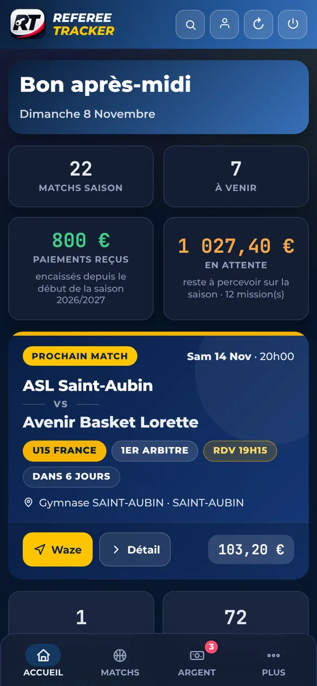
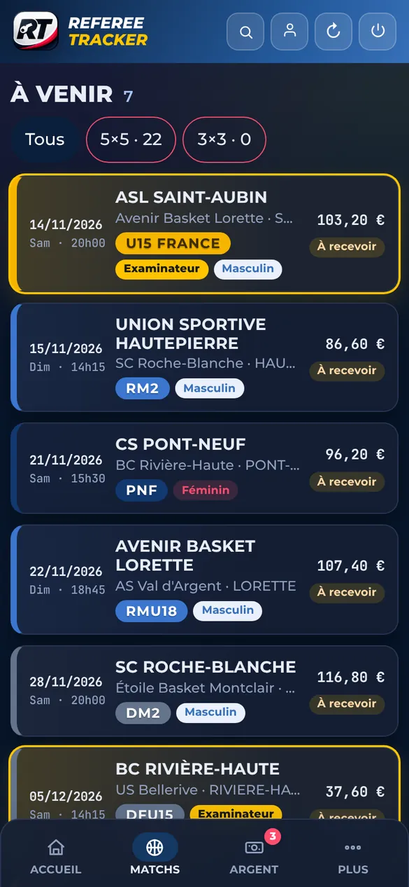
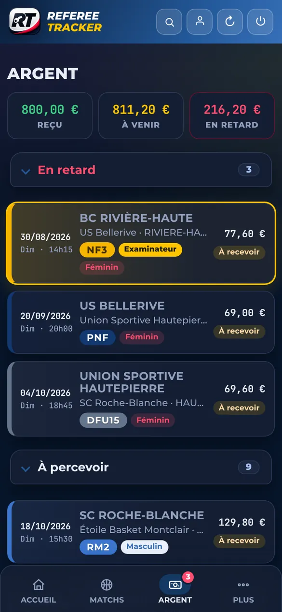
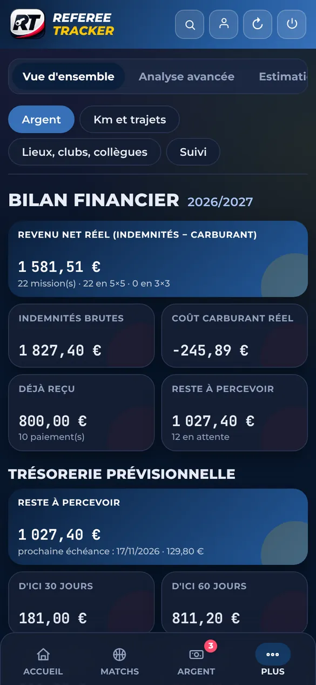
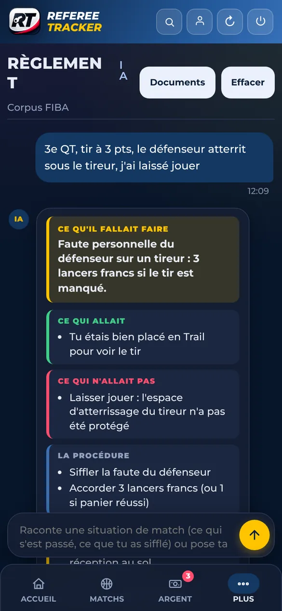
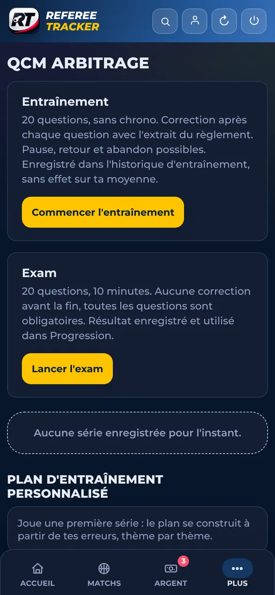
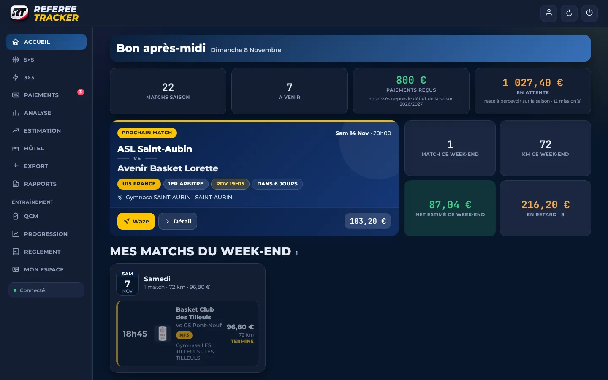
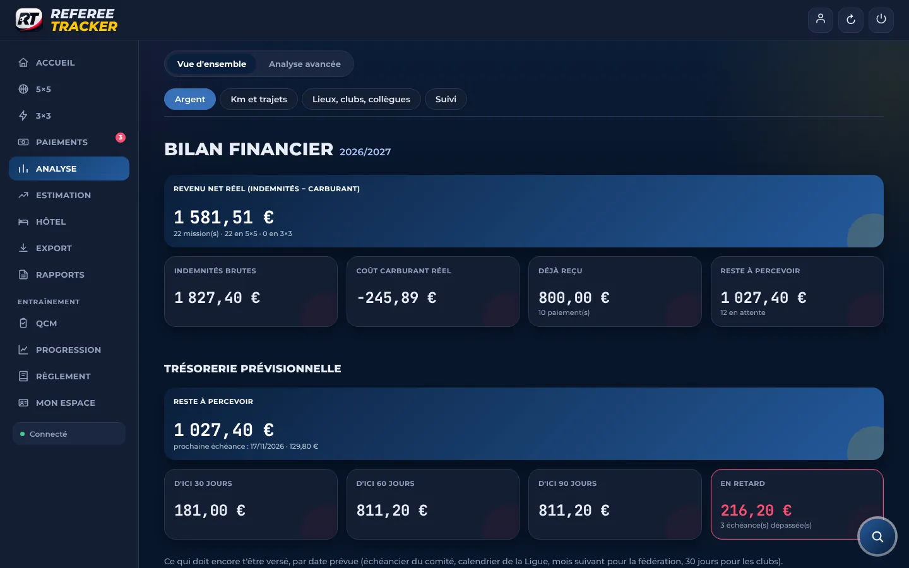
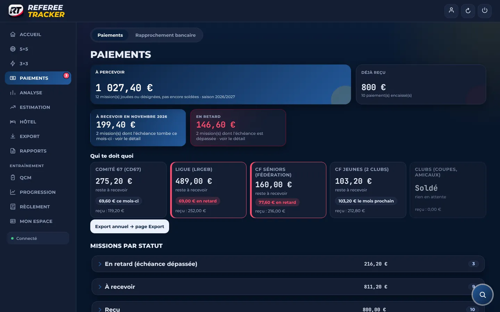

1
Tu crées une règle de transfert
Dans Gmail, Outlook ou Orange, une règle envoie chaque convocation vers ton adresse prenom@referee-tracker.fr. Deux minutes, une fois pour toutes.
Convocations, kilomètres, indemnités, paiements : tout se fait tout seul. Tu transfères tes convocations. Referee Tracker crée chaque match, calcule ton indemnité au centime, suit qui te doit quoi et te prévient au bon moment. Fini les tableurs : zéro saisie.




Les vrais écrans de l'application (données fictives). Touche un onglet ou laisse défiler.


Tu continues à recevoir tes convocations comme aujourd'hui. Tu les transfères, l'app fait le reste toute la saison.
Dans Gmail, Outlook ou Orange, une règle envoie chaque convocation vers ton adresse prenom@referee-tracker.fr. Deux minutes, une fois pour toutes.
Date, heure de rendez-vous, salle, équipes, niveau, ton rôle, ton collègue. Les modifications et annulations mettent le match à jour tout seul.
Kilomètres depuis chez toi, indemnité selon le barème, date de paiement prévue, rappel la veille et alerte si un paiement tarde.
Bouge les curseurs. L'app fait ce calcul pour chaque match, avec ton barème, tes kilomètres réels et ton véhicule.
Exemple indicatif : la part fixe et le taux kilométrique dépendent de ton comité, de ta ligue et du niveau du match. Comprendre le calcul
Lues automatiquement, y compris modifications, reports et annulations.
Part fixe et kilomètres aller-retour depuis ton adresse, selon ton barème.
Chaque payeur, sa date de paiement prévue, ses retards. Un paiement reçu se marque en un geste.
Tes matchs dans Calendrier, Google Agenda ou Outlook, à jour tout seuls.
Nouveau match, annulation, heure de départ, paiement en retard.
Analyse de tes situations de match et entraînement adapté à tes erreurs.
Match, équipes et numéro repris de la convocation. Tu écris, l'app met en forme.
Observations, axes de travail et classements des équipes que tu arbitres.
Même compte, mêmes données : analyse détaillée, export annuel, rapports.



Aucune connexion à ta messagerie : seuls les e-mails que tu transfères arrivent dans l'app.
Données cloisonnées par arbitre, mot de passe de 12 caractères minimum.
Base de données dans l'Union européenne, connexions chiffrées, sauvegarde chiffrée chaque nuit.
Aucune donnée bancaire. Export ou suppression sur demande : rgpd@referee-tracker.fr.
Non, jamais. Tu transfères toi-même tes convocations (ou tu crées une règle de transfert automatique) vers ton adresse Referee Tracker. L'app ne voit que ce que tu lui envoies.
Rien pendant la bêta, ouverte à un petit groupe d'arbitres. Les demandes suivantes passent sur liste d'attente.
Dans l'Union européenne, chiffrées en transit, visibles uniquement par toi. Détails dans la politique de confidentialité.
Ce sont des calculs faits à partir des barèmes de ton comité, de ta ligue et de ta fédération, et de tes kilomètres réels. La convocation officielle reste la référence. Comment l'indemnité est calculée.
Non : l'app fonctionne dans le navigateur de ton téléphone ou de ton ordinateur et s'ajoute à l'écran d'accueil comme une application, avec ses notifications.
Non. Referee Tracker est un projet indépendant, créé par un arbitre, sans lien avec les instances du basket.
Demande ton accès : on configure ton compte pour ta zone et ton niveau, et tu reçois ton code de première connexion par e-mail.
Rejoindre la bêta gratuite